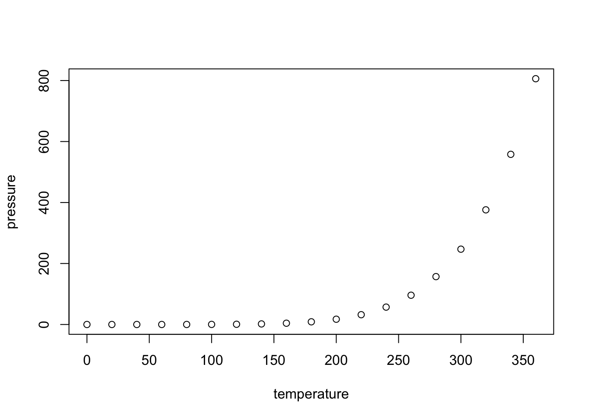

Network Analysis
2020-12-18
Chapter 1 Hello World
#example for ?sigmajs::sigmajs
library(sigmajs)
nodes <- sg_make_nodes()
edges <- sg_make_edges(nodes)
sigmajs() %>%
sg_nodes(nodes, id, label, size, color) %>%
sg_edges(edges, id, source, target) 1.1 R Markdown
This is an R Markdown document. Markdown is a simple formatting syntax for authoring HTML, PDF, and MS Word documents. For more details on using R Markdown see http://rmarkdown.rstudio.com.
When you click the Knit button a document will be generated that includes both content as well as the output of any embedded R code chunks within the document. You can embed an R code chunk like this:
## speed dist
## Min. : 4.0 Min. : 2.00
## 1st Qu.:12.0 1st Qu.: 26.00
## Median :15.0 Median : 36.00
## Mean :15.4 Mean : 42.98
## 3rd Qu.:19.0 3rd Qu.: 56.00
## Max. :25.0 Max. :120.001.2 Including Plots
You can also embed plots, for example:

Note that the echo = FALSE parameter was added to the code chunk to prevent printing of the R code that generated the plot.